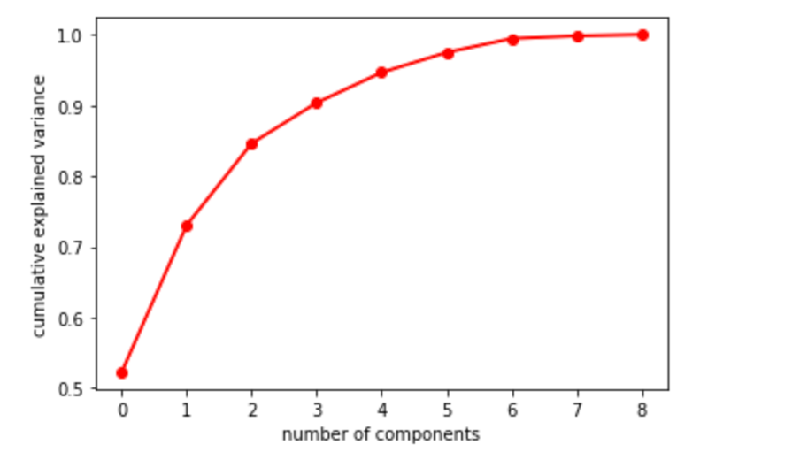
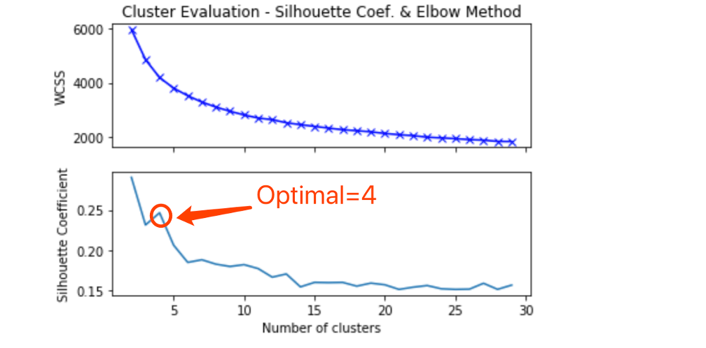

How should a retailer fairly compare the operational metrics of its retail stores? In some cases, management are simply comparing the operational metrics between stores in the same geographical area. However, a major drawback of this method is that even closely located stores might differ significantly enough in size, demographics, etc.
The purpose of our project is to unleash the power of unsupervised learning to help management identify comparable stores for key operational metrics evaluation. We have used three different methods to find store cohorts and visualized our findings in 3D space for user interaction.
The data of this project is provided by the company management, which contains approximately 1,000 store demographics and weekly performance metrics for approximately 100 weeks. For confidentiality, this article only outlines the methodology for the project but not the detailed data analysis or modeling.
The flow chart above outlines the methodology in our project. The first step we took is to define the operational metric by identifying a couple of key metrics that we need to compare the stores against. Next, we relied on domain knowledge to find out a group of features correlated to the key metrics. These features define the characteristics of a store but should not be affected by the store manager’s ability to run the store. Such features could be the number of nearby competitors, population within five kilometers of the store, etc. Then, we performed feature engineering, and feature selection using correlation analysis or Lasso to finalize the features we selected.
To define the store similarities, we used the Euclidean distance as calculated in the formula below:
To reduce dimensionality, we utilized PCA and selected the most important principal components, which should at least explain 90% of the variation, as shown in the graph below. For illustration and visualization purposes, we picked the first three principal components.

In our 3D space defined by the first three principal components, it is easy to show that the stores with shortest Euclidean distance are the most similar to each other. Based thereon, we implemented three unsupervised learning methods to cluster stores into cohorts.
We first used K-Means clustering to classify stores into four main cohorts. The optimal number of cohorts could be obtained through the Elbow method and Silhouette Coefficient.

Stores in the same cohort group are comparable to each other. However, the stores on different edges of the cohort might still be very different. To address this issue. we proposed a second method.
WK-Nearest-Neighbor method could be used to find the most similar stores (red dots in the graph below) for every target the user selected (green dots in the graph below). Given one target store, the method will always find the nearest K stores, as measured by the smallest Euclidean distance.
The K-Means method will always put any store into one of the groups, and the KNN method will always find some comparable stores for any target store. However, what if there is an outlier that is unique and should not be in any group?
To detect these unique stores, we used DBSCAN method with two parameters - radius in Euclidean distance (“eps”) and minimum points in the radius (“minPts”) - to detect noise points. The noise points are the unique stores with few similar stores within a certain radius.By using eps=1 and minPts=3, we found a minor group with only three stores (green dots in the graph below). In addition, the red dots in the graph are the outlier stores detected.